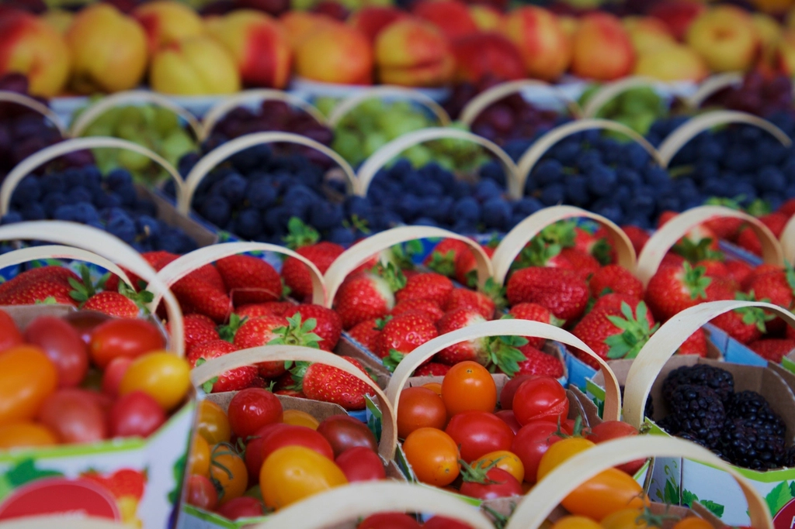
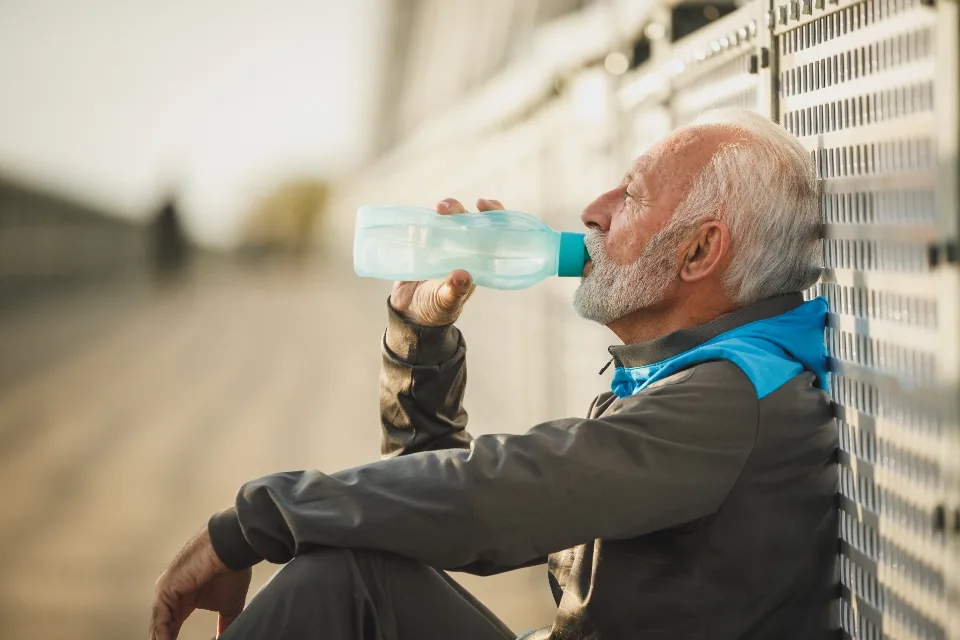
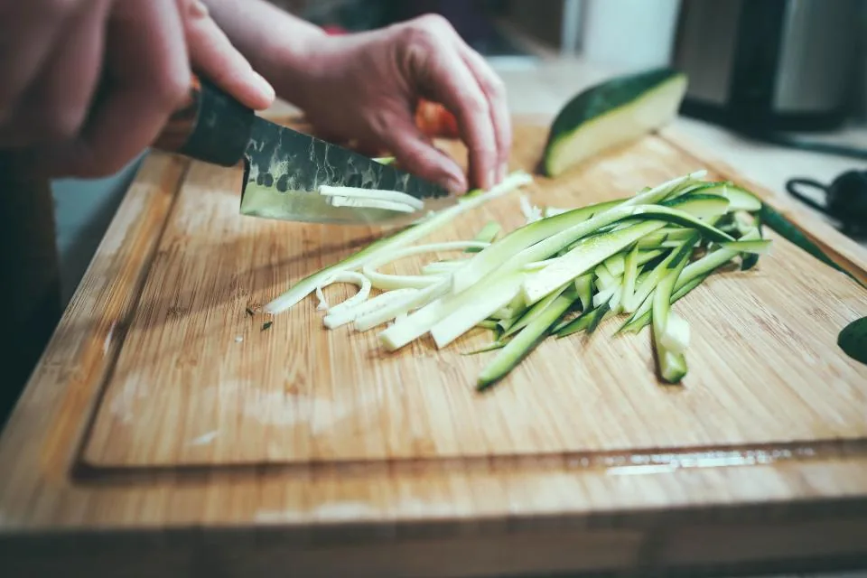
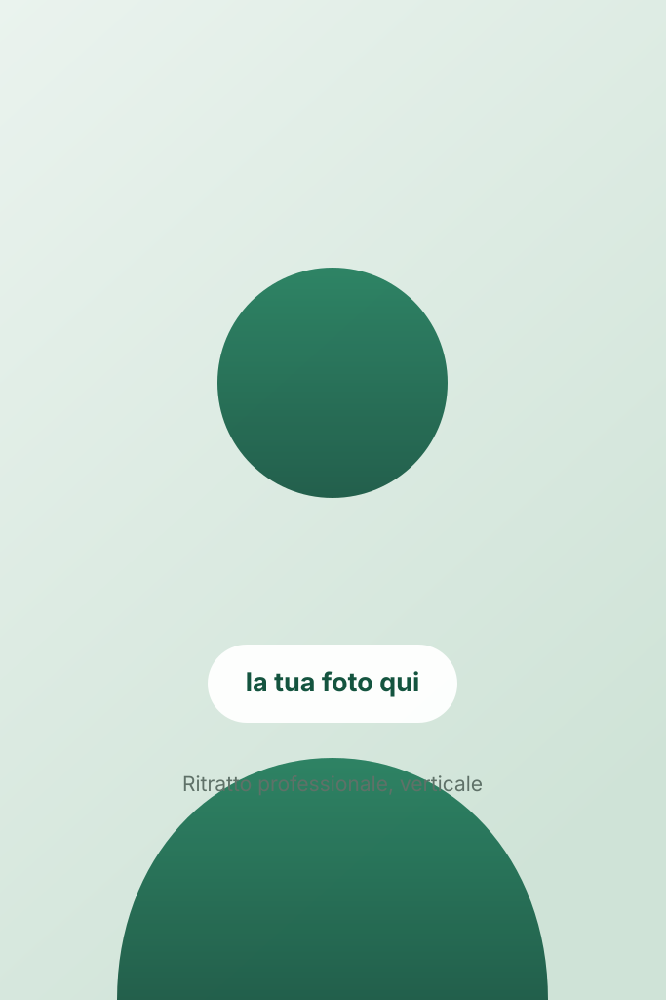
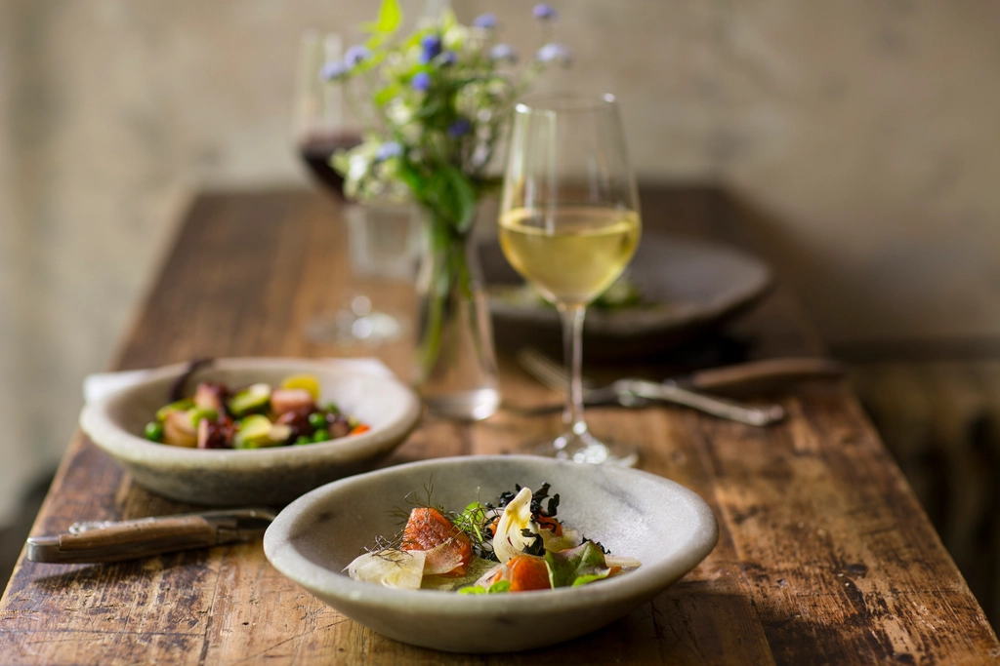
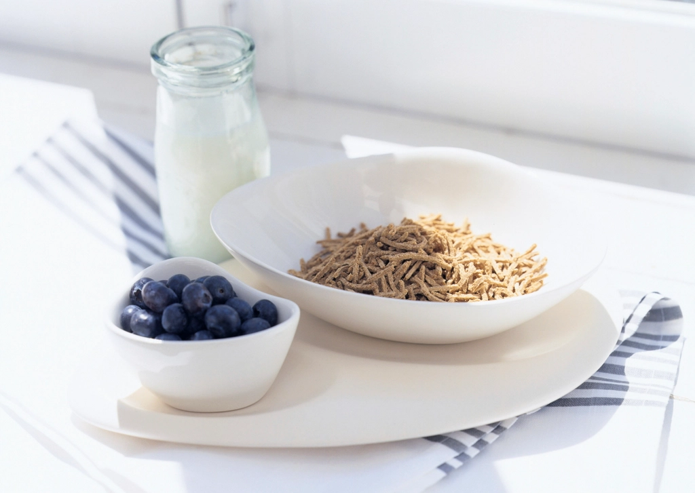

Dimagrimento
Perdita di massa grassa sostenibile, con un piano che rispetta i tuoi ritmi e i tuoi gusti.
Percorsi alimentari costruiti su di te: la tua giornata, i tuoi orari, i tuoi gusti. Niente diete fotocopia, niente alimenti proibiti — solo un metodo che tiene nel tempo.

Una famiglia da sfamare, una cena fuori con gli amici, la partita la domenica. Il percorso si costruisce intorno a questo, non il contrario.


Il problema quasi mai è la forza di volontà. È che nessuno costruisce un piano attorno alla tua vita reale.
Funzionano finché resisti, poi torni al punto di partenza — spesso peggio di prima.
Stesso schema per tutti, senza guardare i tuoi orari, il lavoro, la famiglia, lo sport.
La cena fuori con gli amici diventa un problema. Così il percorso salta.
Ricevi il piano e sparisci. Quando arriva il momento di stallo, sei da solo.
Il percorso cambia in base a chi ho davanti. Questi sono i casi che seguo piu spesso.

Da oltre dieci anni affianco adulti, famiglie e sportivi che vogliono stare meglio senza trasformare la tavola in un campo di battaglia.
Lavoro con un principio semplice: la dieta migliore è quella che riesci a seguire. Per questo parto sempre da come mangi oggi, non da un modello teorico — e spiego ogni scelta, così il risultato resta anche quando il percorso finisce.
Dal percorso di dimagrimento alla nutrizione clinica e sportiva, fino al supporto in gravidanza.
Perdita di massa grassa sostenibile, con un piano che rispetta i tuoi ritmi e i tuoi gusti.
Diabete, colesterolo, tiroide, intestino irritabile, insulino-resistenza: percorso integrato con il medico.
Composizione corporea, performance e recupero — dall'amatore all'agonista.
Alimentazione sicura e bilanciata per mamma e bambino, prima e dopo il parto.
Educazione alimentare concreta, dallo svezzamento all'età scolare.
Stesso percorso, da casa: videochiamata, piano digitale e supporto tra le visite.
Quattro momenti chiari. Sai sempre cosa stai facendo e perché.
Un'ora di ascolto: abitudini, storia del peso, esami, obiettivi. Valutazione antropometrica.
Entro una settimana ricevi il piano alimentare — grammature, alternative e ricette semplici.
Ogni 3-4 settimane misuriamo i risultati e correggiamo la rotta, senza partire da zero.
L'obiettivo finale è che tu non abbia più bisogno di me: autonomia e consapevolezza.
Piatti veri, porzioni chiare, alternative per ogni giornata.


★★★★★“Non credevo si potesse perdere peso mangiando così tanto. Il piano era chiaro e non ho mai avuto la sensazione di essere a dieta.”
Maria G.
★★★★★“Mi ha spiegato il perché di ogni scelta. Dopo anni di diete fai-da-te ho finalmente capito come gestirmi da sola.”
Antonio P.
★★★★★“Puntualissimo, disponibile anche per un dubbio tra una visita e l'altra. Consigliato a chi ha poco tempo per se stesso.”
Carmela D.
Testimonianze segnaposto da sostituire con recensioni reali (nome e iniziale del cognome, come da privacy).
Prezzi trasparenti, senza sorprese. La ricevuta sanitaria è detraibile.
No. Il biologo nutrizionista è una professione sanitaria: puoi prenotare direttamente. Se hai una diagnosi o una terapia in corso, porta la documentazione: lavoriamo in accordo con il tuo medico.
Se le hai fatte negli ultimi 6 mesi, sì: aiutano a inquadrare il percorso. Se non le hai, non è un ostacolo per iniziare.
No. Nessun alimento è proibito: si impara a gestirlo nelle quantità e nei momenti giusti. È il motivo per cui il percorso tiene nel tempo.
Sì. Videochiamata per la visita, piano in formato digitale, messaggi di supporto tra un incontro e l'altro. Stesso percorso, stesso prezzo.
I primi cambiamenti misurabili arrivano di norma tra le 3 e le 6 settimane. Il lavoro vero è consolidare l'abitudine, ed è quello che facciamo nei mesi successivi.
Scegli giorno e fascia oraria: si apre WhatsApp con il messaggio gia scritto. Ti confermo io la disponibilita entro 24 ore.
Preferisci il telefono? +39 347 000 0000
Scrivimi su WhatsApp o chiama: ti rispondo personalmente entro 24 ore con la prima data disponibile. Nessun impegno.